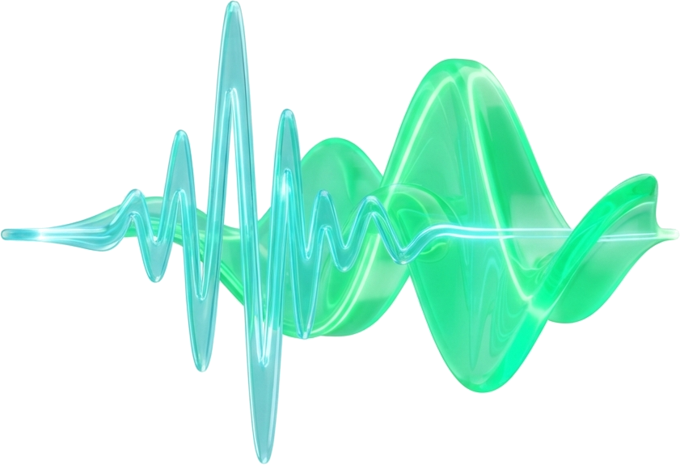

Física, no magia
02 / 05
No predice el sismo.
Lo detecta.
Cuando la tierra se mueve, primero viaja una onda rápida y débil. Después llega la fuerte —la que sientes.
Onda P → alerta · Onda S → temblor

Cuando la tierra se mueve, primero viaja una onda rápida y débil. Después llega la fuerte —la que sientes.